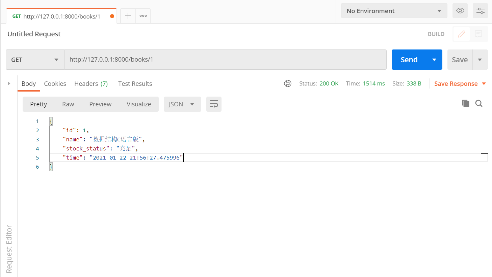

序列化（Serializers）
一、序列化
-
序列化：序列化器会把模型对象转换成字典,经过response以后变成json字符串
-
反序列化：把客户端发送过来的数据经过request以后变成字典，序列化器可以把字典转成模型。
二、基本使用
1. 查
使用流程：
- 新建一个
py文件（专门用来写序列化类）写一个序列化的类，继承Serializer。在类中写要序列化的字段（想序列化哪个字段，就在类中写哪个字段）。
- 在视图类中使用：导入序列化类然后实例化得到序列化类的对象，并且把要序列化的对象传入。
序列化类的对象.data可以得到一个字典- 把字典返回：如果不使用
rest_framework的Response，就得使用JsonResponse
1. 准备models.py
序列化Serializers是为了方便操作模型，先准备models。
1
2
3
4
5
6
7
8
9
10
11
12
13
14
15
16
17
18
19
20
21
22
23
24 | class Book(models.Model):
title = models.CharField(max_length=32, verbose_name="书名")
price = models.DecimalField(max_digits=8, decimal_places=2, verbose_name="价格")
sales = models.IntegerField(verbose_name='销售量')
publish = models.ForeignKey(to='Publish')
authors = models.ManyToManyField(to='Author')
class Publish(models.Model):
name = models.CharField(max_length=32, verbose_name="出版社名称")
addr = models.CharField(max_length=64, verbose_name="通讯地址")
class Author(models.Model):
name = models.CharField(max_length=32, verbose_name="作者姓名")
age = models.IntegerField(verbose_name="年龄")
author_detail = models.OneToOneField(to='AuthorDetail')
class AuthorDetail(models.Model):
email = models.EmailField(verbose_name="邮箱")
addr = models.CharField(max_length=32, verbose_name="通讯地址")
|
2. 创建序列化的类
新建一个serializers.py
| from rest_framework import serializers
class BookSerializer(serializers.Serializer):
# 写上要序列化的字段：serializers.字段类型()
# 键的名字要和model.py中的一样
id = serializers.IntegerField()
title = serializers.CharField()
price = serializers.DecimalField(max_digits=8, decimal_places=2)
sales = serializers.IntegerField()
publish_id = serializers.IntegerField()
|
3. 在views.py写视图
需要继承rest_framework中的APIView。
1
2
3
4
5
6
7
8
9
10
11
12
13
14
15
16 | from django.shortcuts import render, HttpResponse
# Create your views here.
from rest_framework.views import APIView
from app.models import Book
from app.serializers import BookSerializer
from rest_framework.response import Response
class BookView(APIView):
# 查询一条数据
def get(self, request, pk):
book = Book.objects.filter(id=pk).first()
book_ser_obj = BookSerializer(book) # 实例化，传入要序列化的对象
return Response(book_ser_obj.data) # 返回序列化以后的字典
|
4. 在urls.py注册路由
| from django.conf.urls import url
from django.contrib import admin
from app import views
urlpatterns = [
url(r'^admin/', admin.site.urls),
url(r'^books/(?P<pk>\d)', views.BookView.as_view()),
]
|
5. 验证
2. 改
使用流程：
- 写一个序列化的类，继承
Serializer。在类中写要反序列化的字段。
- 在视图类中使用：导入序列化类；实例化得到序列化类的对象，把要修改的对象和修改的数据传入。如：
book_ser_obj=BookSerializer(instance=book,data=request.data)
-
数据校验 book_ser_obj.is_valid()
-
如果校验通过，就保存：book_ser_obj.save()
- 如果校验不通过，自己写逻辑处理
-
如果字段的校验规则不够，可以写钩子函数
-
局部钩子：校验一个字段
- 全局钩子：同时校验多个字段
2.1 在视图类中写put()方法
1
2
3
4
5
6
7
8
9
10
11
12
13
14
15
16
17
18
19
20
21
22
23
24
25 | class BookView(APIView):
...
def put(self, request, pk):
# 定义一个返回的数据
response_msg = {'status': 100, 'msg': '成功'}
# 找到要修改的对象
book = Book.objects.filter(id=pk).first()
# 得到一个序列化类的对象
# 需要传入的参数可以再父类中找到
# class BaseSerializer(Field):
# def __init__(self, instance=None, data=empty, **kwargs):
book_ser_obj = BookSerializer(instance=book, data=request.data)
# 进行数据验证
if book_ser_obj.is_valid(): # 返回True表示验证通过
book_ser_obj.save()
response_msg['data'] = book_ser_obj.data # 字典格式
else:
response_msg['status'] = 101
response_msg['msg'] = '数据校验失败'
response_msg['data'] = book_ser_obj.errors
return Response(response_msg)
|
当直接发送PUT请求时，会抛出异常
| File "D:\APP\python36\lib\site-packages\rest_framework\serializers.py", line 165, in update
raise NotImplementedError('`update()` must be implemented.')
|
在serializers.py中通过来raise抛出异常，要求我们重新update()方法。
| # serializers.py
class BaseSerializer(Field):
...
def update(self, instance, validated_data):
raise NotImplementedError('`update()` must be implemented.')
|
2.2 在serializes.py中重写update()方法
| class BookSerializer(serializers.Serializer):
...
def update(self, instance, validated_data):
# instance是book这个对象
# validated_data是校验后的数据
instance.title = validated_data.get('title')
instance.price = validated_data.get('price')
instance.sales = validated_data.get('sales')
instance.publish_id = validated_data.get('publish_id')
instance.save() # book.save() django 的orm提供的
return instance
|
2.3 数据校验的钩子函数
2.3.1 局部钩子
1
2
3
4
5
6
7
8
9
10
11
12
13
14
15
16 | # serializers.py
from rest_framework import serializers
from rest_framework.serializers import ValidationError
class BookSerializer(serializers.Serializer):
...
# 局部钩子
def validate_price(self, data): # validate_字段名 接收一个参数
# 如果价格小于0，就校验不通过
print(type(data)) # <class 'str'>
print(data) # -200
if float(data) > 0:
return data
else:
# 校验失败，抛异常
raise ValidationError('价格不能为负数')
|
2.3.2 全局钩子
1
2
3
4
5
6
7
8
9
10
11
12
13 | from rest_framework import serializers
from rest_framework.serializers import ValidationError
class BookSerializer(serializers.Serializer):
...
# 全局钩子，校验多个字段
def validate(self, validate_data):
price = validate_data.get('price')
sales = validate_data.get('sales')
if price < 0 or sales < 0:
raise ValidationError('字段不能为负数')
else:
return validate_data
|
3. 删
| # views.py
from rest_framework.response import Response
class BookView(APIView):
...
def delete(self,request,pk):
response_msg = {'status': 100, 'msg': '成功'}
ret = Book.objects.filter(pk=pk).delete()
return Response(response_msg)
|
以上的三种方法在发送请求时，都需要在books/后加一个主键值。所以上述的三种方法可以公用同一个视图。但是对于查询所有数据和新增数据，books/后不需要加参数，需要新建一个视图类和url匹配规则来实现查询所有和新增数据的方法。
4. 查询所有
新增一个视图类
| class BooksView(APIView):
def get(self, request):
response_msg = {'status': 100, 'msg': '成功'}
books = Book.objects.all()
book_ser_obj = BookSerializer(books, many=True) # 序列化多条,如果序列化一条，不需要写
response_msg['data'] = book_ser_obj.data
return Response(response_msg)
|
添加路由
| from django.conf.urls import url
from django.contrib import admin
from app import views
urlpatterns = [
url(r'^admin/', admin.site.urls),
url(r'^books/(?P<pk>\d)', views.BookView.as_view()),
url(r'^books/', views.BooksView.as_view()),
]
|
5. 增
1
2
3
4
5
6
7
8
9
10
11
12
13
14
15 | class BooksView(APIView):
# 新增
def post(self, request):
response_msg = {'status': 100, 'msg': '成功'}
# 修改才有instance，新增没有instance，只有data
book_ser_obj = BookSerializer(data=request.data)
# 校验字段
if book_ser_obj.is_valid():
book_ser_obj.save() # 需要从写create()
response_msg['data'] = book_ser_obj.data
else:
response_msg['status'] = 102
response_msg['msg'] = '数据校验失败'
response_msg['data'] = book_ser_obj.errors
return Response(response_msg)
|
直接访问同样会抛出异常，需要在序列化类中重写create()方法
| # serializers.py
from app.views import Book
class BookSerializer(serializers.Serializer):
...
def create(self, validated_data):
instance = Book.objects.create(**validated_data)
return instance
|
三、source的使用
1. 修改序列化类中字段的名字
如果不想直接将model中字段的名字暴露，可以通过source来指定model中字段的名字，序列化类中的键可以用别的名字来代替。
| class BookSerializer(serializers.Serializer):
id = serializers.IntegerField()
# title = serializers.CharField()
name = serializers.CharField(source='title')
...
|
2. 跨表
| class BookSerializer(serializers.Serializer):
...
publish = serializers.CharField(source='publish.name') # 查询出出版社的名称
|
3. 执行model表中的方法
source 如果是字段，会显示字段，如果是方法，会执行方法，不用加括号。 如在模型中定义一个方法，直接可以在在source指定执行 。
| # 在模型中加一个choices字段
class Book(models.Model):
...
stock_status = models.IntegerField(choices=((0, '充足'), (1, "紧张"), (2, "无货")), verbose_name='库存状态', default=0)
# 模型表中自己定义的方法
def access_time(self):
import datetime
return datetime.datetime.now()
|
如果想在响应中显示这个字段对应的汉字，就可以使用source。
| class BookSerializer(serializers.Serializer):
...
stock_status = serializers.CharField(source='get_stock_status_display')
time = serializers.CharField(source='access_time')
|

四、封装Response对象
上面的每一个方法中都写了一个response_msg。可以利用的面向对象的封装特性，把响应的消息封装到一个类中。
1
2
3
4
5
6
7
8
9
10
11
12
13
14
15
16
17
18
19 | # 1. 自定义MyResponse类
class MyResponse:
def __init__(self):
self.status = 100
self.msg = '成功'
@property
def get_dict(self):
return self.__dict__
class BooksView(APIView):
def get(self, request):
response = MyResponse()
books = Book.objects.all()
book_ser_obj = BookSerializer(books, many=True) # 序列化多条,如果序列化一条，不需要写
response.data = book_ser_obj.data
return Response(response.get_dict)
|
五、SerializerMethodField
如果想要在序列化的字段中加入authors，直接加authors = serializers.CharField()返回的是"authors": "app.Author.None"。需要借助SerializerMethodField来返回其他字段。
1
2
3
4
5
6
7
8
9
10
11
12 | class BookSerializer(serializers.Serializer):
...
# 需要有个配套方法，方法名叫get_字段名，返回值就是要显示的东西
authors = serializers.SerializerMethodField()
def get_authors(self, instance):
# book对象
authors = instance.authors.all() # 取出所有作者
res = []
for author in authors:
res.append({'name': author.name, 'age': author.age})
return res
|

六、 模型类序列化器ModelSerializer
-
不需要重写create()和update()方法了，其他使用和上述一样。
-
序列化数据库时使用
1. 定义
| class BookModelSerializer(serializers.ModelSerializer):
class Meta:
model = Book # 指明参照哪个模型类，对应上models.py中的模型
fields = '__all__' # 指明为模型类的哪些字段生成
|
2. 指定序列化字段
2.1 使用fields来明确字段，__all__表名包含所有字段，也可以写明具体哪些字段，如
| class BookModelSerializer(serializers.ModelSerializer):
class Meta:
model = Book
fields = ('id', 'title','price') # 只序列化指定的字段
|
2.2 使用exclude排除字段
| class BookModelSerializer(serializers.ModelSerializer):
class Meta:
model = Book
exclude = ('name',) # fields和exclude只能写其中一个
|
2.3 指明只读字段
| class BookModelSerializer(serializers.ModelSerializer):
class Meta:
model = Book
fields = '__all__'
read_only_fields=('name',)
|
2.4 额外参数
| class BookModelSerializer(serializers.ModelSerializer):
class Meta:
model=Book
fields='__all__'
extra_kwargs = { # 类似于这种形式name=serializers.CharField(max_length=16,min_length=4)
'price': {'write_only': True},
}
|
2.5depth
连表按层次深度返回每一层的所有 字段
返回的字段过多